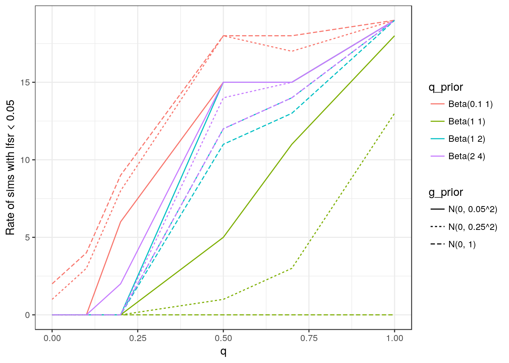
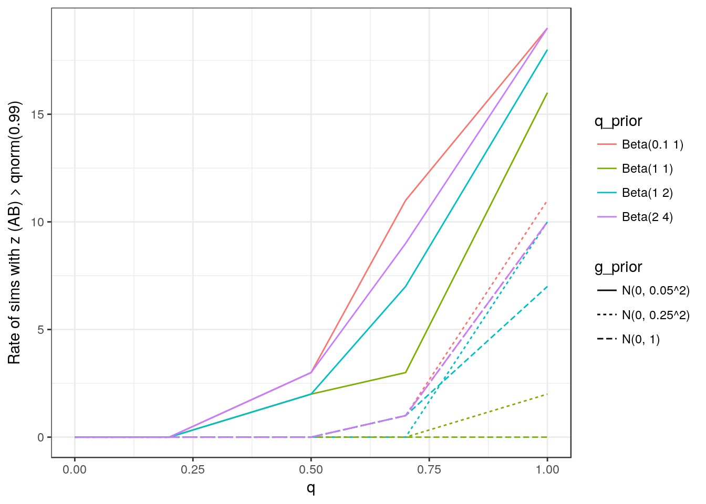

MR Accounting for Confounding
Jean Morrison
May 3, 2018
Introduction
This page describes a modification to the three factor model we have worked with so far that will hopefully
- Make the model easier to understand
- Make the results easier to interpret
- Position our approach more solidly inside the MR framework making it easier to draw comparisons with other methods
So far we have used a model illustrated by the figure below:
There are three “factors”, trait 1, trait 2 and the “shared factor” (SF). Variants acting on trait 1 either act through the SF or directly on trait 1. One confusing element of this model is that the interpretation of the shared factor changes depending on the value of \(q\) which is the proportion of trait 1 variants acting through the SF. If \(q\) is small then we interpret the SF as a confounder and conculde that the causal effect of trait 1 on thrait 2 is 0. If \(q =1\) then we interpret the SF as equivalent to trait 1 and say that the data are consistant with a causal effect.
Discussions of Mendelian randomization approaches typically use diagrams like the one below:
In this figure, \(M\), the possible mediator is the same as what we have called trait 1 and \(Y\) is equivalent to our trait 2. \(G_i\) is the genotype of variant \(i\). The simplest MR methods assume that \(\theta_i= 0\) for all \(i\) and that there is no association between \(G_i\) and any confounder. Egger regression allows for non-zero \(\theta_i\) as long as \(Cov(\theta, \beta_M) = 0\). Our goal is to also allow for some confounding. Currently our model and the MR model above are not exactly the same. Our parameter \(b\) is equivalent to \(\gamma\) only when \(q=1\). Otherwise our model implicitly assumes that \(\gamma=0\) and \(b\) is an estiate of the effect of \(U\) on \(Y\). By adding a single parameter, we can both make our model more flexible and bring it into the MR framework.
In the model pictured above, \(U\) has taken the place of the shared factor. We make the following assumptions which are very similar to the assumptions made previously:
- Each variant \(i \in 1, \dots, p\) acts either on \(M\) or on \(U\). Note that we have made the effect of \(U\) on \(M\) equal to 1 (just as the effect of the SF on trait 1 was equal to 1) so that variant effects on \(U\) are on the same scale as variant effects on \(M\). The proportion of variants acting on \(U\) is \(q\).
- The true efects of variants on \(M\), \(\beta_{M,i}\), follow a unimodal distribution centered at 0 which we model as a mixture of normals.
- The pleiotropic effects of variants on \(Y\), \(\theta_i\) also follow a unimodal distribution centered at 0 modeled by a mixture of normals.
Thus, this model allows for two forms of confounding: mean 0 effects of \(G_i\) on \(Y\) through \(\theta_i\) and non-mean 0 effects through \(U\). Our goal is to determine wheter \(\gamma=0\) (or possibly whether \(\gamma\) is large enough that we can expect to have gotten its sign right using our data).
Likelihood for summary statistics
Likelihood
The likelihood for this model is very similar to the likelihood for the previous model. In this description I will use notation consistent with the diagrams above (i.e. \(\beta_{M,i}\) instead of \(\beta_{1,i}\) and \(\beta_{Y,i}\) instead of \(\beta_{2,i}\)). There are a few nuisance parameters that, at first we will assume are known. In fact, these will be estimated from the data and then fixed. These are:
- \(\rho\): The correlation between \(\hat{\beta}_{M,i}\) and \(\hat{\beta}_{Y,i}\) conditional on \(\beta_{M,i}\) and \(\beta_{Y,i}\). This arises from overlapping samples in the two studies or from population structure.
- The joint distribution of \(\beta_{M,i}\) and \(\theta_{i}\) is modeled as \[ \begin{pmatrix} \beta_{M,i}\\\theta_i\end{pmatrix} \sim \sum_{k=0}^{K}\pi_k N\left( \begin{pmatrix} 0 \\ 0 \end{pmatrix}, \begin{pmatrix} \sigma_{k,1} & 0 \\ 0 & \sigma_{k,2} \end{pmatrix} \right) \] We assume that we know both the mixing parameters \(\pi_0, \dots, \pi_K\) and the grid of variances \((\sigma_{0,1}, \sigma_{0,2}), \dots, (\sigma_{K,1}, \sigma_{K,2})\). For convenience we define \(\Sigma_k= \begin{pmatrix} \sigma_{k,1} & 0 \\ 0 & \sigma_{k,2} \end{pmatrix}\).
- GWAS summary statistics include estimates of the variance of \(\hat{\beta}_{M,i}\) and \(\hat{\beta}_{Y,i}\) which we refer to as \(s_{M,i}^2\) and \(s_{Y,i}^2\) respectively. We assume that these estiamtes are very close to the true variance of effect size estimates and ignore any variability in them.
We will also assume that all SNPs are independent of each other (not in LD). We will discuss the effects of LD later. For one variant, we assume that \(\hat{\beta}_{M,i}\) and \(\hat{\beta}_{Y,i}\) are jointly normally distributed with mean \(\beta_{M,i}\) and \(\beta{Y,i}\) \[ \begin{pmatrix} \hat{\beta}_{M,i}\\\hat{\beta}_{Y,i}\end{pmatrix} \sim N\left( \begin{pmatrix} \beta_{M,i} \\ \beta_{Y,i} \end{pmatrix}, \begin{pmatrix} s_{M,i}^2 & \rho s_{M,i} s_{Y,i} \\ \rho s_{M,i} s_{Y,i} & s_{Y,i}^2 \end{pmatrix} \right) \] We define \(S(\rho)_i = \begin{pmatrix} s_{M,i}^2 & \rho s_{M,i} s_{Y,i} \\ \rho s_{M,i} s_{Y,i} & s_{Y,i}^2 \end{pmatrix}\). \(\beta_{M,i}\) is simply the effect of variant \(i\) on \(M\). \(\beta_{Y,i}\) is the total effect of variant \(i\) on \(Y\) so \[ \beta_{Y,i} = \theta_i + (\gamma + Z_i \gamma^\prime)\beta_{M,i}\] where \(Z_i\) is an indicator variable indicating that variant \(i\) acts on the confounder \(U\). We assume that \[ Z_i \sim Bern(q) \]
Integrating out \(Z_i\), \(\theta_i\) and \(\beta_{M,i}\) we obtain
\[ \begin{pmatrix} \hat{\beta}_{M,i}\\\hat{\beta}_{Y,i}\end{pmatrix} \sim q \sum_{k=0}^{K}\pi_k N\left( \begin{pmatrix} 0 \\ 0 \end{pmatrix}, A(\gamma + \gamma^\prime)^\top \Sigma_k A(\gamma + \gamma^\prime) + S(\rho)_i \right) +\\ (1-q) \sum_{k=0}^{K}\pi_k N\left( \begin{pmatrix} 0 \\ 0 \end{pmatrix}, A(\gamma )^\top \Sigma_k A(\gamma) + S(\rho)_i \right) \] where \(A(x) = \begin{pmatrix} 1 & 0 \\x & 1 \end{pmatrix}\)
Estimating Nuisance Parameters
We estimate \(\rho\), \(\pi_0, \dots, \pi_K\) and \(\Sigma_0, \dots, \Sigma_K\) by maiximizing the likelihood with \(\gamma\) and \(\gamma^\prime\) set to 0 (making the value of \(q\) irrelevant). Since these are estimated in the same way as we have done before, I will skip the details here. One description is here.
Priors for \(q\), \(\gamma\) and \(\gamma^{\prime}\)
Below I will show simulation results for several different priors for \(q\), \(\gamma\) and \(\gamma^\prime\). In general I consider priors of the form \[ \gamma \sim N(0, \sigma_g)\\ \gamma^\prime \sim N(0, \sigma_g)\\ q \sim Beta(a, b) \] The priors for all parameters are independent.
In the two parameter model we used previously I have generally used \(a = 0.1\), \(b=1\) and \(\sigma_g = 0.6\). For the prior on \(q\) in the new model, we have the following considerations:
- If the prior on \(q\) strongly restricts \(q\) to be close to 0, we could obtain false positives (the posterior of \(\gamma\) will be pushed away from 0 rather than pushing \(q\) away from 0)
- If the prior on \(q\) has lots of weight on values close to 1, the method may have many false negatives (the posterior of \(\gamma\) will stay close to 0 but \(q\) will be very close to 1).
For the priors on \(\gamma\) and \(\gamma^\prime\) we have the following considerations:
Why give them the same prior? We are interested in partitioning the directional effect of trait \(M\) variants on trait \(Y\) into two parts, a portion that is shared by all variants (\(\gamma\)) and a portion that is shared only by a few variants (\(\gamma^\prime\)). Suppose that \(\gamma^\prime\) is 0 and \(\gamma\) is large. If we have a small prior variance on \(\gamma\) and a large prior variance on \(\gamma^\prime\) then we will tend to have false negatives where we push the posterior of \(q\) close to 1 and \(\gamma^\prime\) away from 0. We could also obtain false postives in the opposite scenario. We would like the probability that a SNP acts on through \(U\) or \(M\) to depend only on the global trends in effect sizes, not the size of the effect size. Therefore, the prior on the two parameters should be the same.
How big should \(\sigma_g\) be? One way to think about this is to write \(\gamma\) in terms of the total proportion of trait \(Y\) genetic variance explained by the causal effect. Let \(\tau\) reperesent this parameter. Then \[ \tau = \gamma^{2}\frac{\sum_{i=1}^{p}\beta_{M,i}Var(G_i)}{\sum_{i=1}^{p}\beta_{Y,i}^2 Var(G_i)}\\ = \gamma^{2} \frac{h^2_M V(M)}{h^2_Y V(Y)} \] where \(V(M)\) and \(V(Y)\) are the total variance of traits \(M\) and \(Y\) respectively and \(h^{2}_M\) and \(h^2_Y\) are the narrow sense heritabilities of the two raits. If all of these values are known then we can choose a reasonable value for our expectation of \(\tau\) (e.g. 5%) and set \(\sigma_g^2 = \frac{\tau^* h^2_Y V(Y)}{h^2_M V(M)}\) where \(\tau^*\) represents our guess about the value of \(\tau\). A major difficulty with this approach is that \(V(M)\) and \(V(Y)\) are often unknown. In some cases, the traits are standardized but in many cases they are not. If the summary statistics are obtained through simple linear regression then we have \(s_{Y, i}^2 \approx \frac{V(Y)}{2 N_{Y,i} p_i (1-p_i}\) where \(p_i\) is the allele frequence of SNP \(i\) and \(N_{Y,i}\) is the sample size at that variant. The equivalent expression holds for trait \(M\). This means that if sample size is known, we can estimate \(V(Y)\) and \(V(M)\) from the standard errors of the effect estimates. However, in most cases, none of these conditions hold so choosing \(\sigma_g\) is still an outstanding problem.
Estimating Posteriors for \(q\), \(\gamma\) and \(\gamma^\prime\)
I have investigated several alternatives for estimating posteriors.
When we only had two parameters, I found that we could get good estimates using a grid approximation. In this method we divide the domain of the parameters into rectangular bins. Let \(\Omega\) be the vector of model parameters (in this new model \(\Omega = (q, \gamma, \gamma^\prime)\)). Then the posterior probability of \(\Omega\) falling into bin \(j\) is \[ P(\Omega \in B_j \vert \text{Data}) = \frac{\int_{\Omega \in B_j}P(\Omega)P(\text{Data}\vert \Omega)d\Omega}{\sum_{j}\int_{\Omega \in B_j}P(\Omega)P(\text{Data}\vert \Omega)d\Omega } \] If the bins are small enough, we can assume that \(P(\text{Data} \vert \Omega)\) is constant over the bin and approximate it by its value at the center of the bin. This makes it simple to calculate both the numerator and the normalizing constant.
With only two parameters, I got good results by restricting the range of \(b\) (now \(\gamma^\prime\) in the new model) to \((-1, 1)\) and dividng both the range of \(b\) and of \(q\) into 100 equal sized segments (10,000 total calculations of the likelihood). For a few hundred or a thousand SNPs, this calculation took a few minutes using 8 cores. Clearly, we cannot directly extend this strategy to three parameters as the time would increase to several hours per calculation. Therefore, I looked at a few alternative strategies:
Adaptive grid approximation. In this strategy the boundaries of the bins are chosen adaptively so that each bin contains no more than a pre-sent proportion of the posterior probability. This strategy massively reduces the number of bins needed and thus the computational time.
Metropolis hastings approximation
After comparing both strategies to a denser grid approximation that takes longer, I determined that the adaptive grid approximation is the most reliable and requires less tweaking and quality monitoring. One major caveat with this strategy is that if the starting grid is not dense enough, it can completely miss narrow peaks leading to very bad posterior estimates.
Inference
Ultimately we would like not just to estimate posteriors but to a) prioritize possible mediators by their evidence for causality and b) perform hypothesis tests. I considered two possibly complimentary approaches to this problem
Calculate the local false sign rate for \(\gamma\) – i.e. \(LFSR_\gama = min(P(\gamma < 0), P(\gamma > 0))\)
Use the elpd to compare the full model with a model with \(\gamma=0\). This “null” model is the same as our previous two parameter model.
In a first set of simulations, I found that the second method did a better job at separating null from non-null simulations. The performance of both methods depends on the priors used.
Example
Here I show the method applied to an example we have looked at a lot – LDL cholesterol as the mediator (trait \(M\)) and coronary artery disease as trait \(Y\). These data contain 936 SNPs that have been pruned for LD and selected because they have a \(p\)-value less than \(0.001\) for their association with LDL cholesterol. The dsitribution of \(\beta_M\) and \(\theta\) were obtained using a genome-wide set of SNPs.
Below, I estimate the posteriors using each of three methods described above: Adaptive grid approximation, dense grid approximation and metropolis hastings algorithm.
dat <- readRDS("../data/test_data/gls_ldl__cardiogram_cad_data.RDS")
grid <- readRDS("../data/test_data/gls_ldl__cardiogram_cad_grid.RDS")
system.time( res_grid_adaptive <- cause_grid_adapt_v7(dat, grid$grid, grid$rho,
max_post_per_bin = 0.001)) ## user system elapsed
## 348.482 2.675 48.514system.time( res_grid_dense <- cause_grid_approx_v7(dat, grid$grid, grid$rho,
n_gamma=80, n_q=80, n_gamma_prime = 80))## user system elapsed
## 8256.597 60.223 1088.005system.time(res_mh <- cause_mh_v7(dat, grid$grid, grid$rho, nchain = 5, niter_perchain = 5000, thin = 5))## [1] "updating: 10%"
## [1] "updating: 20%"
## [1] "updating: 30%"
## [1] "updating: 40%"
## [1] "updating: 50%"
## [1] "updating: 60%"
## [1] "updating: 70%"
## [1] "updating: 80%"
## [1] "updating: 90%"
## [1] "updating: 100%"
## [1] "updating: 10%"
## [1] "updating: 20%"
## [1] "updating: 30%"
## [1] "updating: 40%"
## [1] "updating: 50%"
## [1] "updating: 60%"
## [1] "updating: 70%"
## [1] "updating: 80%"
## [1] "updating: 90%"
## [1] "updating: 100%"
## [1] "updating: 10%"
## [1] "updating: 20%"
## [1] "updating: 30%"
## [1] "updating: 40%"
## [1] "updating: 50%"
## [1] "updating: 60%"
## [1] "updating: 70%"
## [1] "updating: 80%"
## [1] "updating: 90%"
## [1] "updating: 100%"
## [1] "updating: 10%"
## [1] "updating: 20%"
## [1] "updating: 30%"
## [1] "updating: 40%"
## [1] "updating: 50%"
## [1] "updating: 60%"
## [1] "updating: 70%"
## [1] "updating: 80%"
## [1] "updating: 90%"
## [1] "updating: 100%"
## [1] "updating: 10%"
## [1] "updating: 20%"
## [1] "updating: 30%"
## [1] "updating: 40%"
## [1] "updating: 50%"
## [1] "updating: 60%"
## [1] "updating: 70%"
## [1] "updating: 80%"
## [1] "updating: 90%"
## [1] "updating: 100%"## user system elapsed
## 464.268 6.135 64.189Below, I compare the marginal posterior for the three parameters. The density of samples from the MH algorithm is shown in blue.
From the estimate using the adaptive grid, the lfsr is 0.0011. To use the ELPD to estimate a \(z\)-score comparing to the model with \(\gamma=0\), we use the adaptive grid method to estimate posteriors with \(\gamma=0\)
res_grid_adaptive_gamma_0 <- cause_grid_adapt_v7(dat, grid$grid, grid$rho,
max_post_per_bin = 0.001, fix_gamma_0 = TRUE)
w1 <- waic_v7(res_grid_adaptive_gamma_0$post, res_grid_adaptive$post, dat, grid$grid, grid$rho)
res_grid_adaptive_gamma_0_q_1 <- cause_grid_adapt_v7(dat, grid$grid, grid$rho,
max_post_per_bin = 0.001, fix_gamma_0_and_q_1 = TRUE)
w2 <- waic_v7(res_grid_adaptive_gamma_0$post, res_grid_adaptive_gamma_0_q_1$post, dat, grid$grid, grid$rho)
w3 <- waic_v7(res_grid_adaptive$post, res_grid_adaptive_gamma_0_q_1$post, dat, grid$grid, grid$rho)
# a positive value in cell waic[i,j] indicates evidence in favor of model j.
#A negative value indicates evidence in favor of model iAbove, I fit three progressively more reduced models using the adaptive grid estimation strategy:
A. Full model with both confounding and a causal effect B. Reduced model with \(\gamma=0\): Confounding only. This is the same as the two parameter model we were using previously. C. Purely causal model with \(\gamma=0\) and \(q =1\) or equivalently with \(\gamma^\prime=0\).
Using the elpd to compare model A to model B gives a \(z\)-score of 3.23 with a positive \(z\)-score indicating that model A is preferable. Previosuly we had relied on \(z\)-scores comparing model C to model B. In this case, that comparison would give a \(z\)-score of 3.96 where postive \(z\)-scores indicate evidence in favor of purely causal model C. So in this case, the previous approach gives stronger evidence in favor of the causal model. This is likely because, in this case there is very little evidence of counfounding. Comparing the purely causal model C to the full three parameter model A gives a \(z\)-score of 1.59 in favor of the purely causal model.
All of these fits use the original priors set for the two parameter model (\(a = 0.1\), \(b=1\), \(\sigma_g = 0.6\)).
Simulation Results
This set of simulations is similar to simulations I’ve used for the two parameter model. My goals are to
- Compare different priors
- Compare the lfsr and waic methods of drawing inference about \(\gamma\)
Data Generation
I generate summary statistics from the model described above. In all cases \(\gamma = 0\) and \(\gamma^\prime = 0.25\). I consider values of \(q\) between 0 and 1. For values of \(q < 1\), we hope to be able to detect that correlation in the summary statistics is due to confounding rather than a causal effect. At \(q=1\), the scenario is equivalent to a causal scenario with \(q=0\), \(\gamma=0.25\) and \(\gamma^\prime=0\).
For each simulation, we generate 10,000 independent summary statistics for each trait. We use sample sizes of 1,000 and 5,000 for \(M\) and \(Y\) respectively and draw allele frequencies for each simulated variant from a \(Beta(1,5)\) distribution. On average, there are 100 effect variants for \(M\) and 300 effect variants for \(Y\). The average heritability of \(M\) is 0.7 and the average heritability of \(Y\) is 0.4.
I considered three prior variances for \(\gamma\) and \(\gamma^\prime\): \(0.05^2\), \(0.25^2\) and 1. I considered four different priors for \(q\): \(Beta(0.1,1)\), \(Beta(1, 2)\), \(Beta(1, 1)\) (uniform), and \(Beta(2, 4)\).
LFSR
The plot below shows, for each of the twelve combinations of priors, the the number of simulations with lfsr below a threshold ranging from 0 to 0.5. The total number of simulations run under each condition is 20. On each panel, the top bar shows the prior for \(q\), the bottom panel shows the value of \(\sigma_g\).

For all combinations of priors, almost all of the simulations with \(q=1\) have very low lfsr. Unfortunately, many simulations with \(q=0.7\) or \(q=0.5\) also have low lfsr. Below I show the number of simulations with lfsr below 0.05 or below 0.01 as a function of \(q\).

With the possible exception of the \(Beta(2, 4)\) prior, the lfsr is not that effective at distinguishing between simulations with high values of \(q\) and simulatinos with a causal effect. This indicates that the poterior distribution of \(\gamma\) is often away from 0 when \(q\) is large. Using the \(Beta(1, 2)\) prior on \(q\) results in somewhat better separation of the causal and non-causal simulations but also has reduced power at a threshold of 0.01. All combinations of priors are less effective at separating causal an non-causal simulations than the \(z\)-score comparing models C and B that we used previously (results shown further down).
WAIC \(z\)-scores
Below I look at the \(z\)-score comparing model A (full model with causal effect and confounding) to model B (no causal effect, has confounding). Large \(z\)-scores indicate more evidence in favor of model A and thus more evidence for a causal effect.

This score appears to be more effective at separating causal from non-causal simulations settings. The smallest value of \(\sigma_g\) tends to result in more false positives and the uniform prior has substantially lower power than the other priors for \(q\).
For comparison, below I show the same plots but using the \(z\)-score comparing models C and B which was our strategy using the only the two parameter model. Here, higher \(z\)-scores indicate more evidence for model C, the purely causal model.
Using the \(z\) score comparing models A and B seems to give a slightly lower false postive rate for high values of \(q\) but also slightly reduced power.
This R Markdown site was created with workflowr